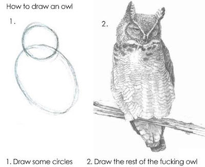

This course is designed with five principles in mind:
Start with cake
Cherish day one
Skip baby steps
Hide the veggies
Leverage the ecosystem
Start with cake
Assuming you like chocolate and strawberries, which of the following images is
more likely to make you want to learn to bake a cake? I’m guessing the
answer is the image on the left: the cake.
The teaching philosophy of this course builds on this same idea. We first show
the students the end result, and then step back and teach the necessary
components. Specifically, instead of starting with data structures and functions,
we start data visualization. And not just a toy example, but a complex,
multivariate data visualization. Of course, we don’t want students feeling like…

The course goes starts out slow and emphasizes iteration. Students are initially
provided with lots of scaffolding, and then slowly we take away the scaffolding
until they are starting with a blank slate for their final projects.
Cherish day one
Don’t spend the first day going through the syllabus in detail, aim to get
students to make their first meaningful data visualization in 10 minutes!
This might sound impossible, and it probably is, if you start by installing R,
and then RStudio, and then a bunch of packages, and making sure students have
Git working on their computer. You could spend a whole class (or more) on this
and not get to a point where every student has their local setup working in
an ideal fashion.
Instead, use cloud-based access to RStudio. This could be via RStudio Cloud or
an RStudio Server you set up locally at your institution. Find out more about
how you can set up your computing infrastructure for friction-less onboarding
here.
Skip baby steps
It’s tempting to start teaching with the simplest examples, e.g. starting
data visualization with a bar graph of a single categorical variable instead
of a multivariate faceted visualization, especially when teaching programming to
build these visualizations since with complex examples comes an extensive
amount of code. Unfortunately very basic data visualizations are rarely as
motivating as those telling the story of the relationship between a number of
variables at once. With the right choice of language and syntax, one can achieve
the goal of starting with motivating and complex examples, and building up to
such examples along the way. The ggplot2
package, a system for declaratively creating graphics, based on
The Grammar of Graphics allows for just this in the
context of data visualization. Similarly, the data wrangling packages
dplyr and
tidyr
work really well with the pipe (%>%) operator in R, which allows for building
up your data manipulation and analysis in a step-wise fashion, similar in spirit
to ggplot2’s layers.
Hide the veggies
This is somewhat tongue-in-cheek. Veggies are absolutely good for you, and it is
important that you learn to enjoy them. However many people wouldn’t list
raw broccoli as their favourite food, however good it might be for them. Similarly
there are many aspects of data science and programming that students must
absolutely learn and understand the importance of, even if they are not the
most exciting part of their data science journey. For example, one cannot do
justice to working with text data without discussing regular expressions. However
regular expressions are likely going to be a pain point in the learning journey
of newcomers with little to no prior programming experience. So, in this course,
instead of teaching students the basics of regular expressions as a unit, we
hide this topic within the context of web scraping and manipulating text fields
into multiple columns to get what we want out of them.
Leverage the ecosystem
The course materials make heavy use of the tidyverse for data visualization and
data wrangling. However, until recently, there was a gap in the R ecosystem
for doing basic statistical inference using a syntax that follows
tidyverse design principles. This
prompted the developments of infer, a package
for performing statistical inference using an expressive statistical grammar
that coheres with the tidyverse design framework. Using infer to introduce
statistical inference makes the transition from the first to the second unit of
the course much smoother, and the development of the package as a collaboration
between like-minded educators is a great example of leveraging an existing
ecosystem to provide a smoother learning experience for students.
Similarly, on the instructor facing side, course organization on GitHub is
managed by the ghclass package. And the
course slides are built with xaringan,
and course website is built with blogdown.
Leveraging all of these packages allows the instructor to live and breathe in R
for all aspects of running their course.
Learn more
The following talk titled “Let them eat cake (first)!” describes in further
detail and with examples from the course materials each of the design principles
outlined aboove.